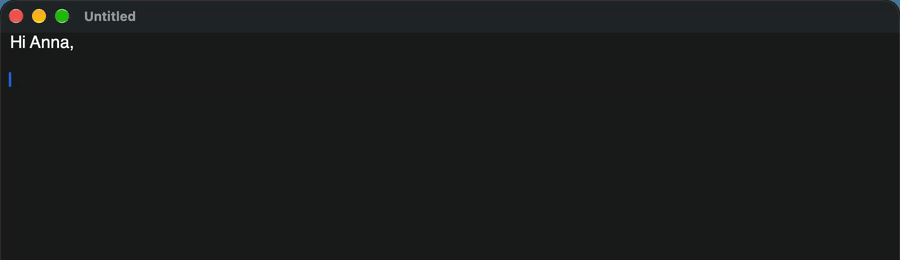
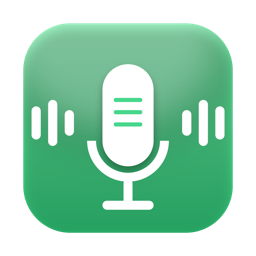
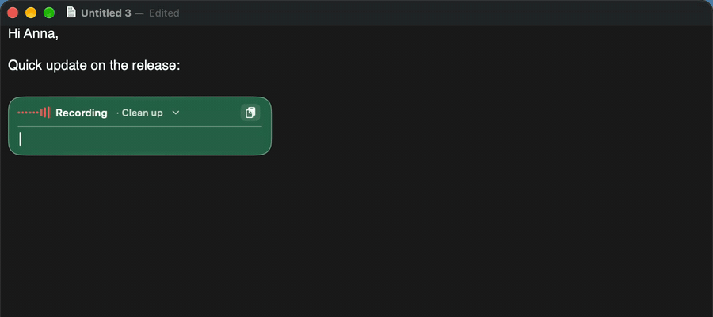
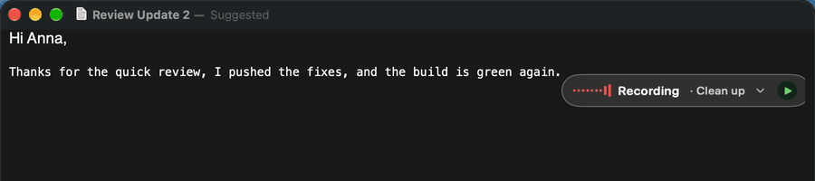
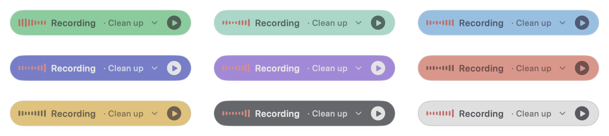
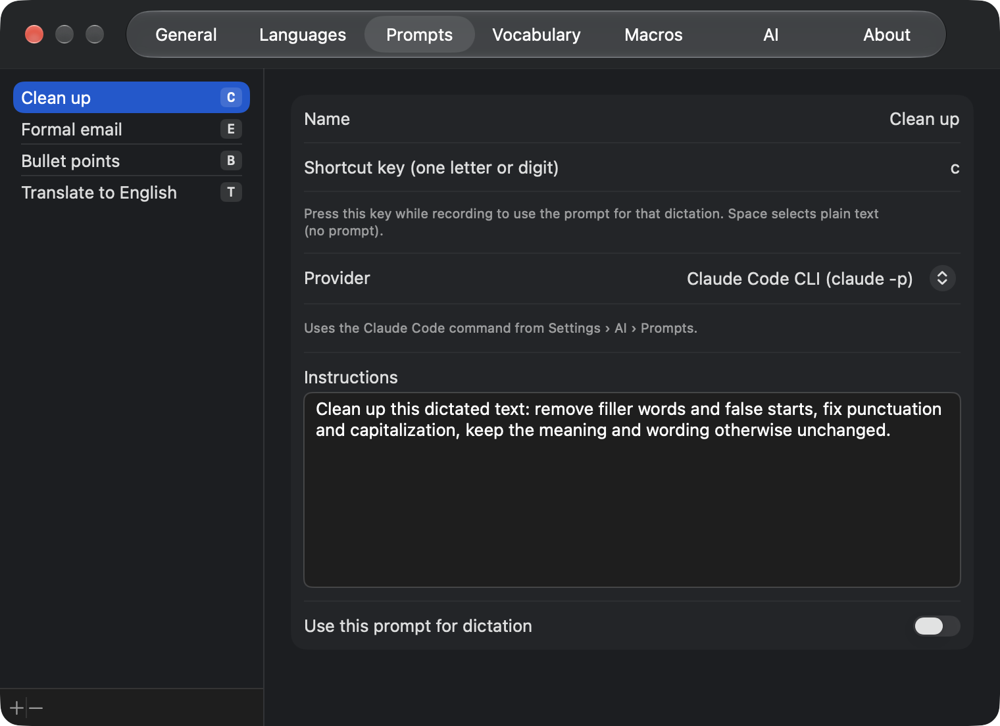
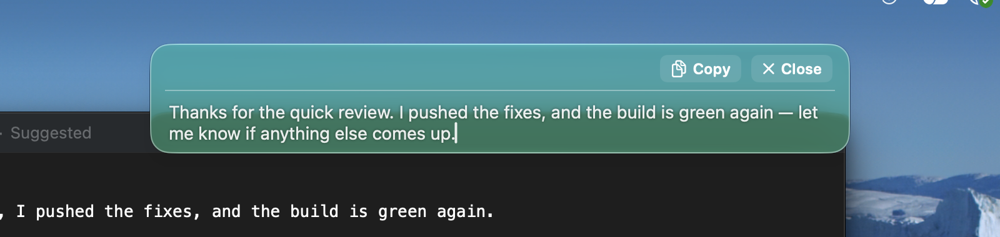
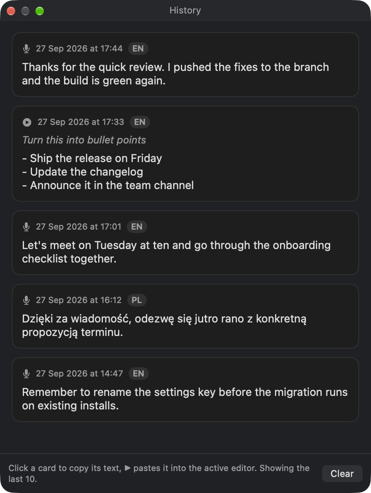
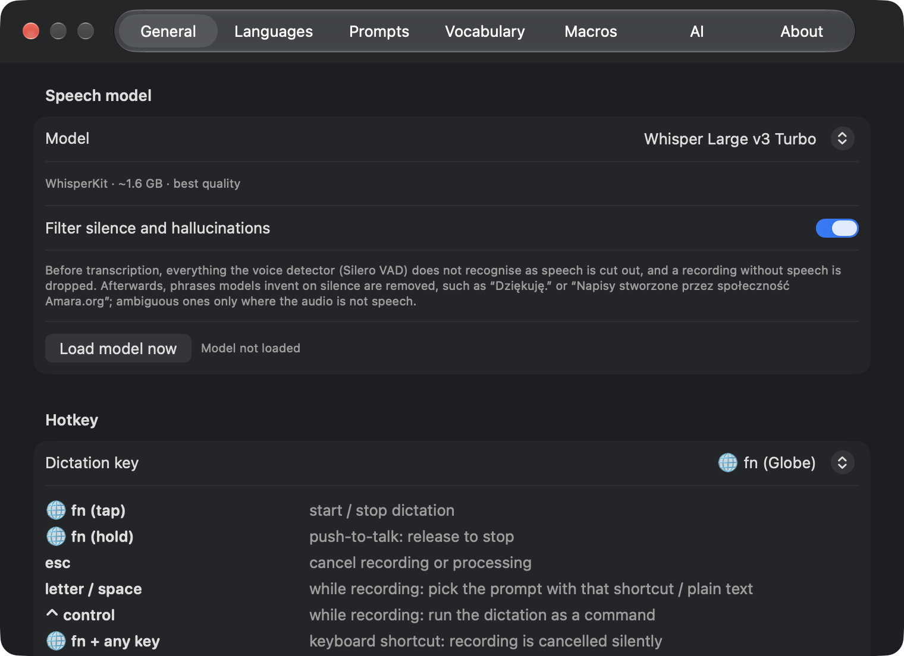

A small HUD appears next to the caret while you speak. Tap fn again and the transcription is pasted in place. Esc cancels at any moment.


SimpleWhisperPress fn, speak, and SimpleWhisper types it into Word, Teams, VS Code, Mail or any other app. Transcribed on your Mac, free and open source.

Live typing: words appear as you speak, greyed while provisional, then confirmed at each pause.
Tap fn to start and stop, or hold it to talk. The text goes wherever the cursor is.
Whisper, Parakeet and Apple Speech run locally on Apple Silicon. A cloud engine is there only if you choose it.
Prompts clean up, format or translate a dictation. Command mode rewrites selected text with a spoken instruction.
A small HUD appears next to the caret while you speak. Tap fn again and the transcription is pasted in place. Esc cancels at any moment.

The HUD shows the microphone level while recording, a rainbow edge while transcribing and while an AI prompt runs, and folds away when it is done.

It floats in Liquid Glass, tinted with one of nine colours.

Pick a prompt from the HUD, or press its letter while recording: Clean up, Formal email, Bullet points, Translate to English, or your own.
Select text, say what to do with it and press Control: the selection is replaced with the result. With nothing selected, your question goes to the assistant.
Works with Claude Code, Codex, Gemini CLI, your own shell command, the Claude, OpenAI and Gemini APIs, or Apple Intelligence.

Dictating over a Finder window or a web page with no text field? The text stays in the HUD, still editable, with Copy and Close.

Keep a history of dictations if you want one, and tune models, hotkeys, the HUD, languages, vocabulary, voice macros and AI providers.


| Model | Runs | Good for |
|---|---|---|
| Whisper Large v3 Turbo | On device, ~1.6 GB | Best quality, many languages |
| Whisper Large v3 | On device, 626 MB | Smaller download |
| Whisper Small | On device, ~200 MB | Quick tests |
| Parakeet v3 | On device, ~0.6 GB | Very fast, 25 European languages |
| Parakeet Ultra | On device, ~0.6 GB | Parakeet v3 post-trained for accuracy |
| Apple Speech | Built into macOS | No download |
| Gemini API | Cloud, your API key | Optional; the recording is sent to Google |
A silence and hallucination filter keeps invented phrases like “Thank you.” out of your text.
xattr -dr com.apple.quarantine /Applications/SimpleWhisper.appFull documentation, hotkeys and building from source are in the README.